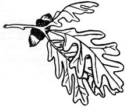
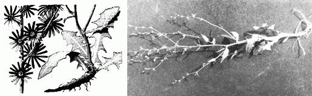
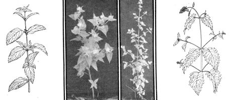
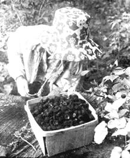

Summer is moving along swiftly here in Wisconsin. Chicory, along the roadsides, is high enough to wave its blue flowers in the slightest warm breeze and wild mint is very noticeable. The well-known catnip-another mint-is also easily recognized by the fragrance it floats on the morning air and, up in the woods, another gift of nature is coming into its own. I got up early today and picked enough for breakfast in just a few minutes. No adjectives that I know will do justice to this fruit: The first blackberries of the year.
Here's how I find, recognize and prepare these four wild foods:
We are fortunate because chicory has chosen to grow-and grow, and grow-near one fish pond on our homestead. We have two patches, each as large as a small house. These volunteer gardens of almost solid chicory would keep me in "coffee" and greens for the year if I utilized them. Anyone who lives in the settled regions of the United States, however, should be close enough to chicory to be able to gather all they want.
Chicory is found frequently in vacant city lots and along most country roads. The plant can be recognized easily by folks who know dandelion, because the young leaves look like slightly wider and deeper-green dandelion leaves.
In early summer the chicory sends up a sturdy stem. This stem has joints about every three inches from which grow narrow leaves that look like they could belong to another plant. From the junction of the narrow leaves and stem a flower bud will grow. When this flower bud is mature it opens-on some kind of a temperamental schedule-to reveal ragged blue flowers that are about one inch in diameter. In short, if you find a plant with leaves like a dandelion and a tall stalk with blue flowers growing out the center, you can be pretty sure you've found chicory.
Chicory can be used as a green in the spring by trimming the tender leaves before they are as tall as a tea cup. Sort out dead leaves and grass and wash the remaining greens twice. Drop them in boiling water and boil for about two minutes. Remove, drain and discard the water.
Boil the leaves a second time for five minutes. Drain and discard the second water and add a third. Boil for an additional five minutes, drain the water and serve the greens with butter, salt and pepper. This water changing is done because chicory leaves are slightly bitter. If you don't mind that, you may like them after the second or even the first water.
I enjoy chicory all summer by mowing one patch whenever it starts to send up the blossom stalk. I use our lawnmower set very low. When the leaves are up again I cover a space about 4 X 6 feet with black plastic. I hold the edges of the plastic down with pieces of pipe so no sunlight can get to the plants and, about two weeks later, I lift the plastic and harvest a crop of blanched leaves. Usually we get plenty of crickets for fish bait from this set-up also.
The blanched chicory leaves can be used for a salad and served with your favorite dressing or they can be boiled like cabbage.
Sometimes blanched leaves will still have a slightly bitter flavor and they will have to be cooked in two waters to make them bland. A few trial leaves will indicate the proper action to take.
One good recipe for the blanched leaves is Braised Chicory. Harvest a pint of blanched leaves. Clean very well and wash thoroughly. Put 1/2-inch of water in a saucepan and add the leaves. Salt and add four tablespoons of margarine and the juice of a small lemon. Simmer gently for 45 minutes and serve hot in the juice.
Right now I would like to dispense with one false notion that is contained in several books on edible wild plants. The writers all say-in words of one kind or another-that chicory leaves can only be eaten in early spring. Chicory leaves are edible all during the growing season. It is merely a matter of boiling them and changing the water a sufficient number of times to reduce the bitterness to a temperament that you find palatable. This can be done until the chicory is perfectly bland.
If you don't have the time or the inclination to blanch chicory you can use the green leaves for the Braised Chicory recipe after you have boiled them long enough to reduce the bitterness to your taste. This will probably take about three changes of water with five minutes of boiling between changes.
Chicory is known as a coffee substitute the world over and tons of it are used in the south for a coffee adulterate. You can make chicory coffee by digging the plants and cutting off the leaves. Peel the roots, slice them in thin strips and roast in a 250° oven for about four hours. Grind the roasted roots and use one teaspoon of ground root for each cup of water. Boil for about three minutes.
When you get tired of chicory root coffee, it's time to look for a two foot high plant that will yield the best tea found in the wild: Mint.
Mint grows in open, sunny marshes and fields and is generally easy to find. Plants of the mint family have square stalks. This feature alone makes them very easy to identify. The other quite obvious characteristic is the minty smell of their crushed leaves.
Mint varies in flavor and odor quite a lot from the very poor to the very good. I have found plants in my locality that had the square stem and leaf characteristics of the mint but no flavor nor odor other than that of a green plant. The best bet is to keep looking and tasting until you find a patch of mint that pleases your palate.
I use mint for tea and jelly. The tea is a favorite of mine and I dry a large coffee can of the leaves for winter use. The drying is done by spreading the entire plants out on a newspaper in a warm place out of the sun. When they are very dry, I strip the leaves from the stalks and store them.
We brew tea by pouring one cup of boiling water into a tea pot for each teaspoon of dried leaves. Let it steep for several minutes. Mint tea can be made from the green leaves also. Just use twice as many of them.
Mint jelly is a great favorite around here. To make it, we use the following recipe: Chop or grind 1 1/2 cups fresh mint leaves and stems. Add 3 1/4 cups water. Bring to a boil. Remove from heat, cover and let steep for ten minutes. Pour through a strainer or sieve to remove the plant parts from the liquid.
Add three drops of green food coloring if you have it and measure three cups of the liquid into a saucepan. Add one box of commercial pectin. Bring to a boil. Add four cups sugar. Bring to a high rolling boil, stirring constantly, and hold for one minute. Remove, skim off foam with a metal spoon and pour into jelly glasses. Seal with melted paraffin.
In this and all jelly and jam recipes the glass containers should be cleaned and sterilized before the jelly making is started. The paraffin melting pans should be made ready and the paraffin placed in it. Paraffin is melted by floating a saucepan containing solid paraffin in a larger pan of boiling water. All berries should be immersed in water and sorted to get ripe, unblemished fruit. In the case of mint, use plants before they have flowered if you can get them.
My dad says that in his younger days-1920ish-every family had a catnip patch and every housewife knew how to brew a swift cup of catnip tea. I suppose it was from those gardens that catnip got scattered around like it is because, now in Wisconsin, it's hard to go for a walk without encountering this mint. It was used in the old days to cure colds and stomach aches of all kinds. Many a child has been bedded down with a sore throat and a hot cup of catnip tea to arise the next morning completely cured.
Catnip is a member of the mint family, as evidenced by its square stem. I locate it usually by its odor, although it has a well defined outline too.
I certainly remember one hiking trip a companion and I took deep into the Nicolet National Forest. Cold and wet from a rain, we stopped near an old beaver dam to rest. Now, large unbroken wilderness areas are among the poorest places to find edible wild plants so I was somewhat surprised to smell a very distinctive odor coming from a large pine deadfall. Walking over, I could see a table-sized patch of catnip happily growing where there hadn't been human habitation for at least a century. We stopped right there, used the pitchy limbs of the deadfall to make a small fire, brewed catnip tea and went on much cheered and refreshed by this body warmer.
Catnip tea is never boiled but the leaves and cold water can be mixed together and the water heated to just short of boiling in a covered container. Let it steep then for several minutes and serve with milk and sugar, if you have any.
The wild food buff will probably want to use catnip mostly for tea or chew the green leaves for minor stomach upsets or as a source of vitamins A and C. There is some evidence that it is a mild tranquilizer also.
Catnip leaves are best picked for tea just before the plant blossoms. The leaves should be dried out of the sun, ground and used in the proportion of one heaping teaspoon of tea to a cup of water. Catnip tea and a bowl of blackberries make a fine bedtime snack.
I guess there are a couple dozen different varieties of blackberries and dewberries but the difference is so minor and the fruit so similar that all we food foragers have to know is where to look for them.
Dewberries grow on low trailing vines and-although easily seen on occasion-are usually found in well shaded places hiding among grass and other vegetation. They look much like blackberries but the fruit does not grow in clusters and they are almost never more than six inches from the ground. I found a good patch this summer when I was mowing tall grass around my hunting cabin with a scythe. I never suspected they were about even though I am always looking for edible plants.
All other varieties of blackberries grow on canes two to six feet in height. Many times these canes grow in hardwood forests. They prefer almost the same soil as oak and hickory trees. They also seem to like hilly terrain.
Blackberry picking is a delight to the wild food forager. There are not too many plants that will yield as much for as little effort. Some rules to remember are: Protect yourself from biting insects and wear a picking can around your neck.
A picking can is a simple device but it will immensely speed your berry harvests. We make ours by drilling opposite holes near the top of a discarded coffee can and tying the ends of a cord through the holes so the can will dangle on the lower chest. The can-suspended as it is-leaves both hands free to pick, swat bugs or move the thorny canes around so they don't scratch (quite so much). Using such a can, which is dumped into a pail when full, I have picked as high as ten quarts of berries on a tong Saturday afternoon.
Blackberries make good jam, jelly, pie, fresh juice or shortcake.
We make blackberry jam by thoroughly crushing two quarts of ripe berries. Measure out half and push them through a sieve to remove the seeds. Remix the sieved berries with the unsieved and place them in a saucepan.
Add one box of any commercial pectin, such as Sure Jell.
Bring to a boil. Add seven cups sugar. Bring up to a rolling boil that cannot be stirred down and hold the boil for one minute. Remove from heat and skim light colored foam from top of jam: Continue to stir and skim for five minutes. Then ladle into jelly glasses leaving 1 /2 inch space at the top. Immediately pour melted paraffin into the space. Let cool and store.
Jelly is made by simmering two quarts of ripe, washed, crushed blackberries in a large saucepan for 15 minutes. Pour the simmered berries into a jelly bag and let them drip overnight into a container approximately as large as the saucepan they were cooked in. Next morning measure out 3 1/2 cups of juice (add water if necessary), place the juice in a saucepan over high heat and add one box commercial pectin. Bring to a high boil and add five cups sugar. Boil to a high rolling boil. Hold for one minute, remove from heat and skim off foam. Pour into jelly glasses leaving 1/2 inch space at the top. Immediately seal by pouring melted paraffin over the top. Let stand to harden and store or use immediately.
The juice we produce by simmering blackberries for jelly also makes a good fresh fruit drink if mixed with lemon or Sumac juice and sweetened. This mixture is so variable that proportions have to be adjusted for individual tastes but most people like it half and half.
To make blackberry pie we first make a crust by mixing two cups white flour with one teaspoon salt and 2/3 cup shortening or lard. The lard is "cut" into the flour and salt by placing lard and flour in a bowl and mixing them together with a pastry blender or two tableknives. The mixing motions are a series of slashes that will produce pea-sized lumps of combined flour and lard, rather than a stirring motion that compacts the mixture.
Add 1/4 cup water to the lumps and stir with a fork until dough is formed. Lightly flour a kneading board and place onehalf of the dough on it. Roll with a rolling pin until the dough forms a sheet approximately 1/8 inch thick. Line the bottom of a nine inch pie tin with sheet of dough and trim excess.
Wash and clean four cups of berries. Combine one cup sugar with four tablespoons flour, two teaspoons instant tapioca (optional) and 1/2 teaspoon cinnamon. Sprinkle this mixture over berries and stir very gently till well blended. Pour blended berries into pie crust.
Now roll remaining dough into a 1/8 inch sheet. Lay this sheet over the top of the berries and pinch upper and lower crusts together to seal. Trim off excess. Prick top crust with a fork in several places and bake for ten minutes in a 450° oven. Then reduce heat to 350° and bake until pie crust is golden brown. This will take about forty minutes. Serve warm with a scoop of ice cream, if you have it.
Blackberry shortcake starts with biscuit dough. "Cut" 1/2 cup lard or shortening into two cups flour, 1/2 teaspoon salt, four teaspoons baking powder, 1/2 teaspoon cream of tartar and two teaspoons sugar. When you have pea-sized lumps formed, add 2/3 cup milk and stir until dough "follows" fork around bowl
Roll out a half inch thick dough sheet on floured kneading board and cut with a biscuit cutter or the top of a water glass that has been dipped in flour before each cut. Bake on an ungreased cookie sheet for ten minutes in 450° oven.
Grind or mash berries and sugar to taste. Split and butter the warm biscuits and ladle sweetened berries over biscuit halves. Serve with whipped cream, if available. I don't recommend this recipe for weight watchers.
Next issue, I'll have more wild foods for you to consider. Meantime, happy foraging.
|
 THIS PAGE: Chicory in line detail and the whole plant from root to tip. RIGHT: Mint illustrated in line- detail and as it grows. FAR RIGHT: Catnip as you will find it in the fields and in line detail. |
 |
 |
|
 |
|
|